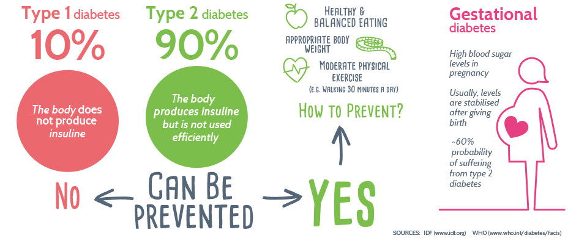
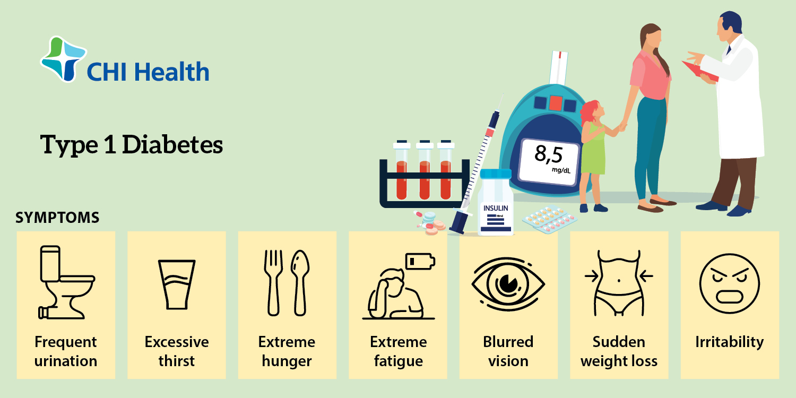
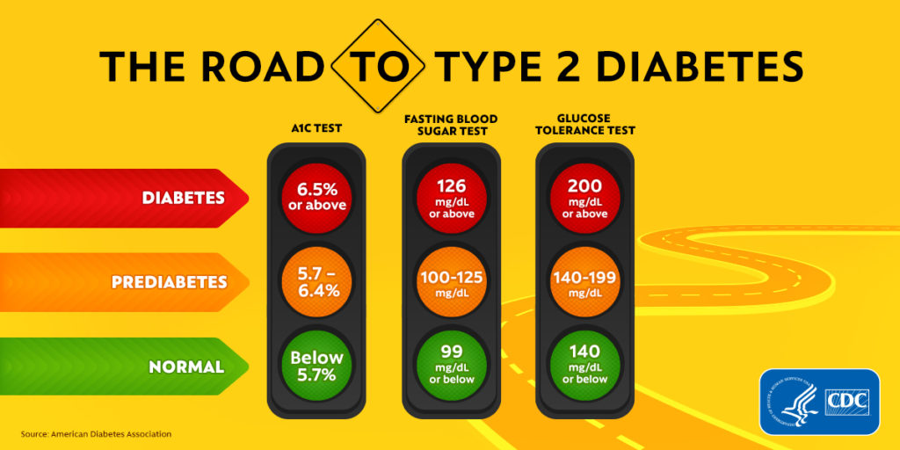
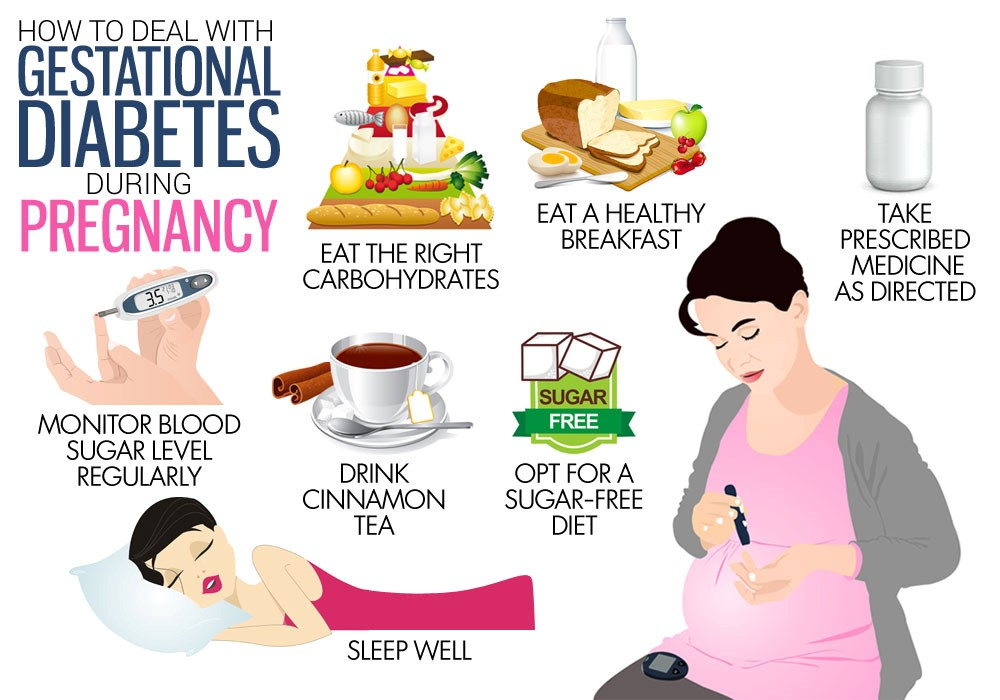

- 
-
Types of Diabetes
There are three main types of diabetes: type 1, type 2, and gestational diabetes(diabetes while pregnant).
-
Type 1 Diabetes
Type 1 diabetes is thought to be caused by an autoimmune reaction (the body attacks itself by mistake) that stops your body from making insulin. Approximately 5-10% of the people who have diabetes have type 1. Symptoms of type 1 diabetes often develop quickly. It's usually diagnosed in children, teens, and young adults. If you have type 1 diabetes, you'll need to take insulin every day to survive. Currently, no one knows how to prevent type 1 diabetes.
- 
- 
-
Type 2 Diabetes
With type 2 diabetes, your body doesn't use insulin well and can't keep blood sugar at normal levels. About 90-95% of people with diabetes have type 2. It develops over many years and is usually diagnosed in adults (but more and more in children, teens, and young adults). You may not notice any symptoms, so it's important to get your blood sugar tested if you're at risk. Type 2 diabetes can be prevented or delayed with healthy lifestyle changes, such as losing weight, eating healthy food, and being active.
-
Gestational Diabetes
Gestational diabetes develops in pregnant women who have never had diabetes. If you have gestational diabetes, your baby could be at higher risk for health problems. Gestational diabetes usually goes away after your baby is born but increases your risk for type 2 diabetes later in life. Your baby is more likely to have obesity as a child or teen, and more likely to develop type 2 diabetes later in life too.
- 
About us
We are committed to providing the most convenient, comprehensive, and accurate diabetes support solutions, offering comprehensive help.
Development Team
| Name | |
|---|---|
| Kaixi(Alex) Liu | liuka@student.unimelb.edu.au |
| Lihui(Frankie) Hu | lihui@student.unimelb.edu.au |
| Jincheng(Derex) Wang | jinchengw@student.unimelb.edu.au |
| Yihang(Tony) Liu | yihang1@student.unimelb.edu.au |
| Zhonghang(Michael) Gu | zhonghang@student.unimelb.edu.au |